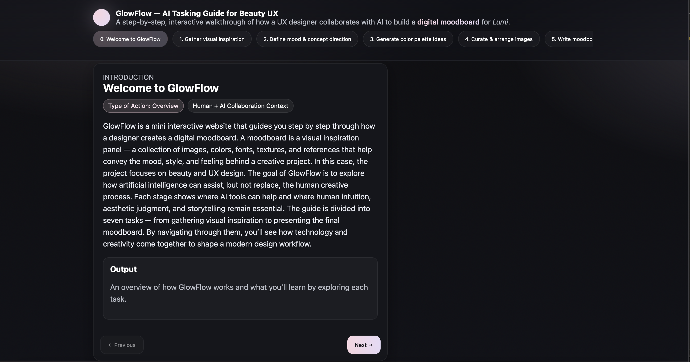
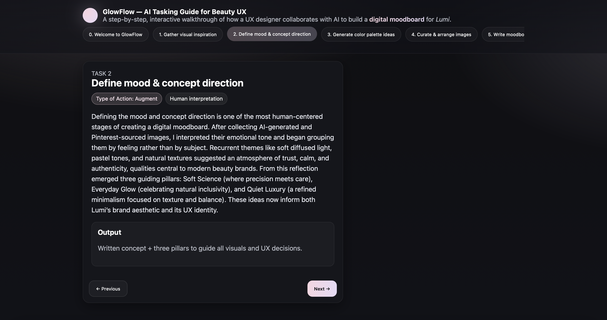
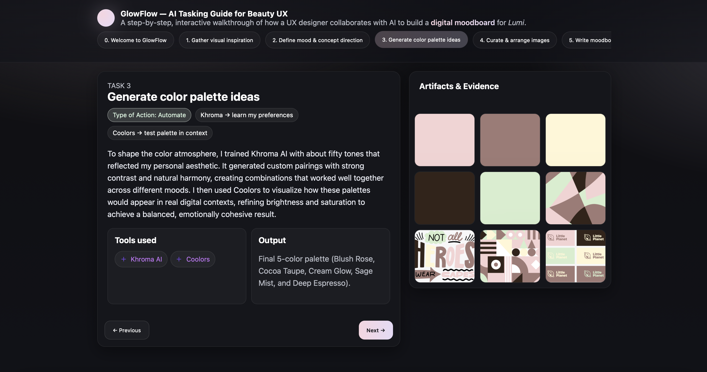
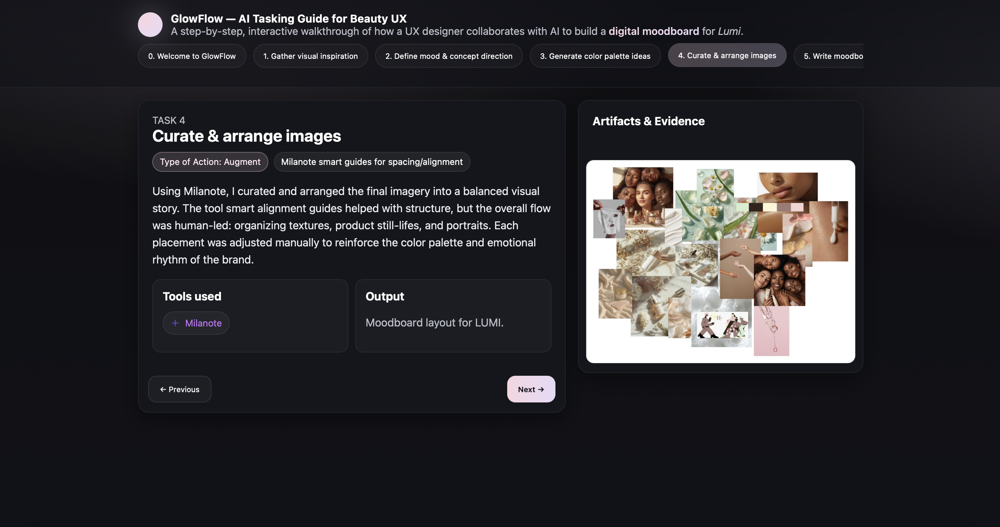
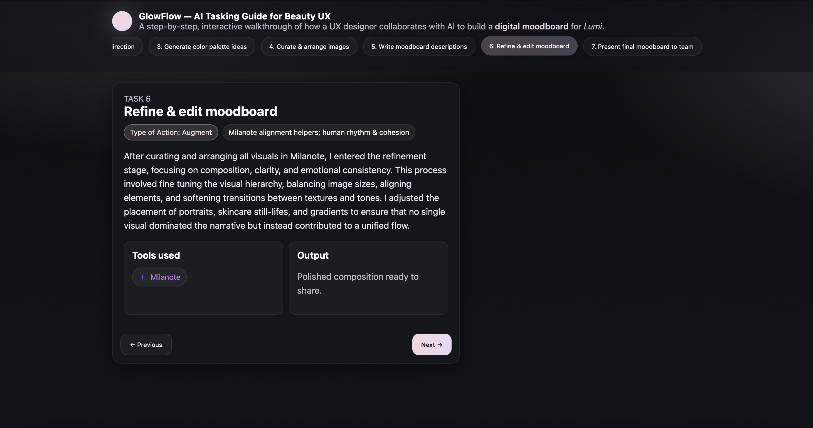
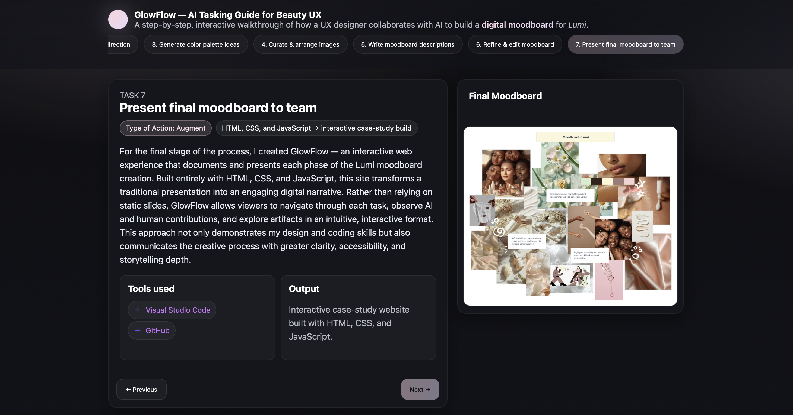
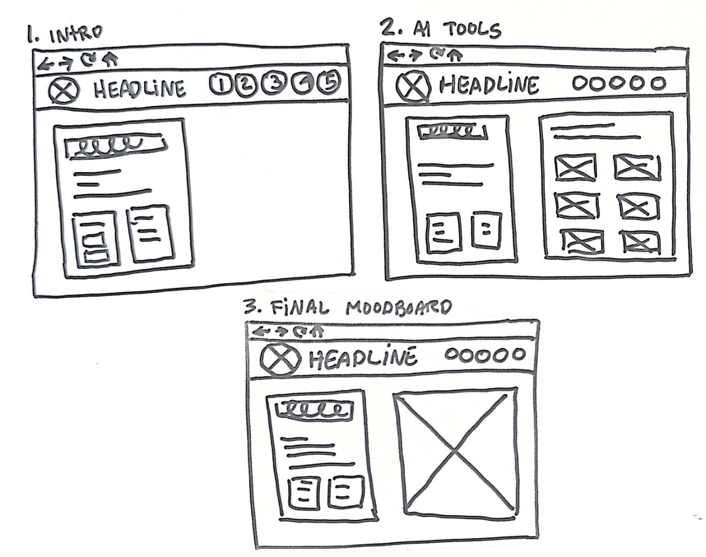

Introduction — Landing Page

Task 1

Task 2

Task 3

Task 4

Task 5

Task 6

Task 7
An AI-assisted creative workflow experience exploring how designers collaborate with generative systems during visual ideation. GlowFlow investigates how AI can support creative decision-making without replacing human intuition or authorship.
View Live ProjectA walkthrough of the GlowFlow interface and interactive process.
AI tools can accelerate visual exploration, but they can also make it difficult for designers to understand where their own creative decisions end and automated suggestions begin. Rather than asking how AI could generate a finished moodboard, I focused on a different question: how might AI support early-stage visual exploration while keeping the designer in control of the final direction?
GlowFlow explores this tension by treating AI as a tool for divergence and discovery, while reserving curation, composition, and final aesthetic decisions for the designer.
I began by examining my existing moodboarding process and identifying the moments where I typically search, compare, curate, and refine visual references. I then experimented with generative tools including Leonardo AI and Khroma AI to understand where automation could genuinely support that workflow.
Through this exploration, I noticed that AI was most useful when generating possibilities rather than making final design decisions. It could quickly introduce unexpected imagery, colors, and visual associations, but the strongest results still depended on human judgment to determine what felt relevant, cohesive, and appropriate for the project.
This insight became the core principle of GlowFlow: AI for divergence, human judgment for convergence.
Before developing the visual interface, I created low-fidelity wireframes to explore the structure and layout of the experience. I focused on how users would progress from the introduction, through the AI tools and exploration stages, to the final moodboard. This helped establish the page hierarchy, content placement, and overall flow before moving into visual design.

Low-fidelity sketches used to define page structure, content hierarchy, and the progression from introduction to the final moodboard.
Based on the research, I structured GlowFlow as a step-by-step workflow that alternates between AI-assisted exploration and human-led decision-making. Each stage has a clear purpose, helping the user understand not only which tool to use, but why it is useful at that point in the creative process.
Using a fictional skincare brand as a case study, I experimented with Leonardo AI for visual inspiration and Khroma AI for color exploration while keeping curation, composition, and final aesthetic decisions human-led.
When designing the GlowFlow website itself, I wanted the visual language to reinforce the feeling of exploration and creative flow. Soft gradients, translucent panels, subtle glowing elements, and smooth transitions create continuity between each stage while keeping the interface focused and easy to navigate.
GlowFlow shifted my perspective from asking what AI can generate to thinking more carefully about where AI actually belongs within a design process. The project showed me that the value of an AI-assisted workflow is not simply speed, but the ability to expand exploration while preserving intentional human decision-making.
If I continued developing the project, I would conduct usability testing with other designers to evaluate whether the distinction between AI-assisted and human-led stages is clear, whether the sequence feels natural, and which parts of the workflow are genuinely useful outside of my own creative process. This would allow GlowFlow to evolve from a workflow based primarily on my own design practice into a system informed by a broader range of designer behaviors.
The final experience guides the designer through a sequence of AI-assisted and human-led tasks, making the division between exploration, evaluation, and final creative decision-making visible throughout the workflow.

Introduction — Landing Page
Task 1

Task 2

Task 3

Task 4
Task 5

Task 6

Task 7